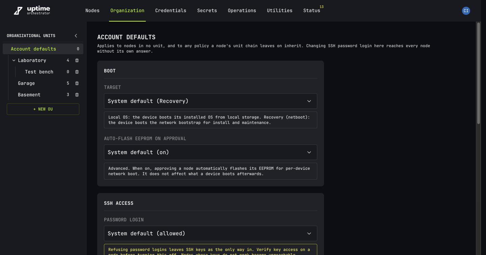
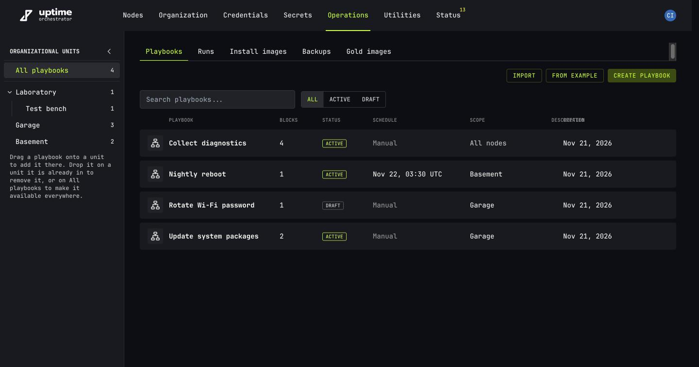
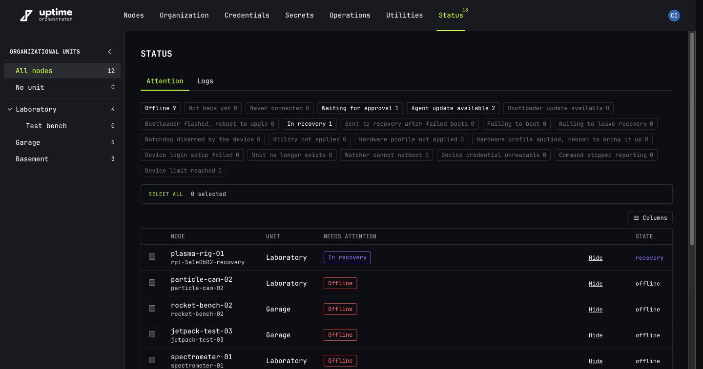
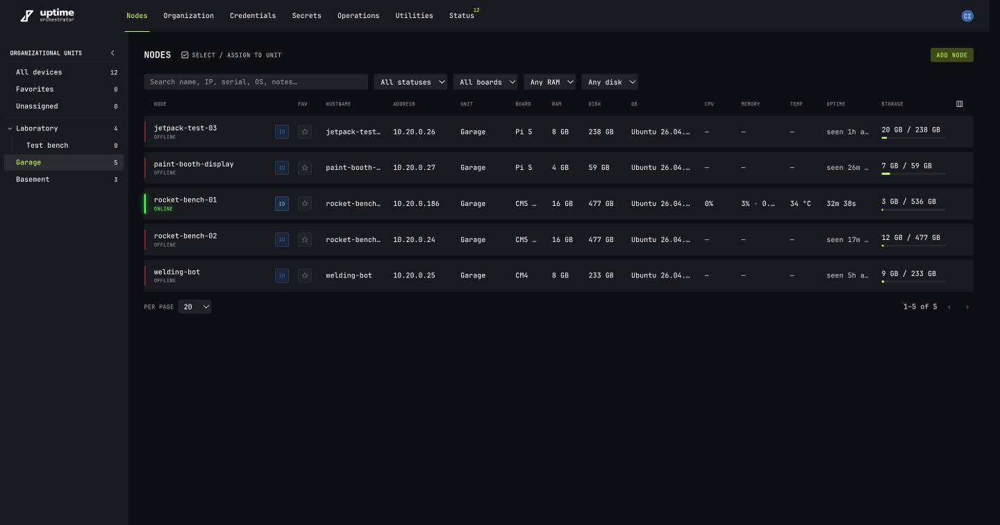
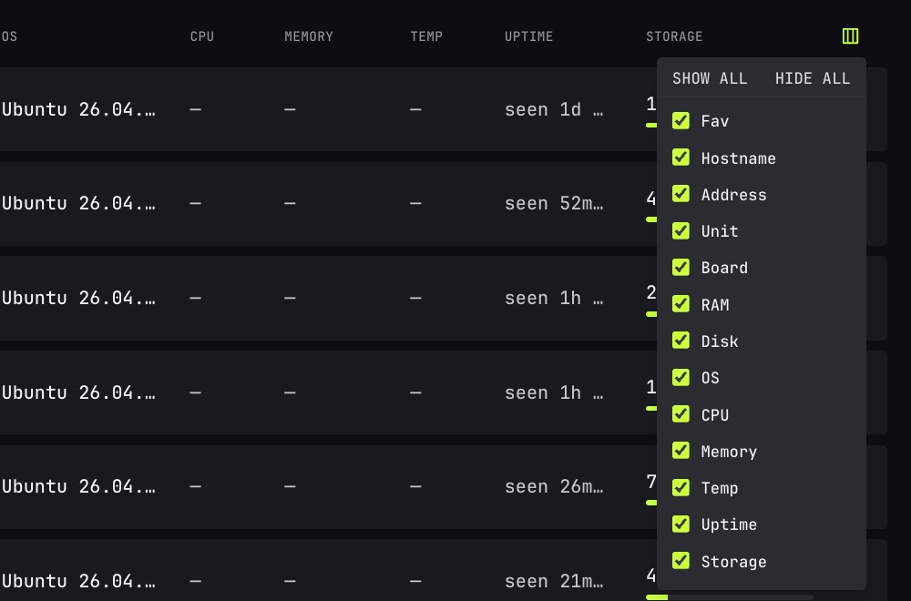
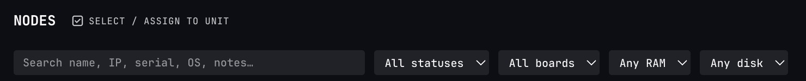
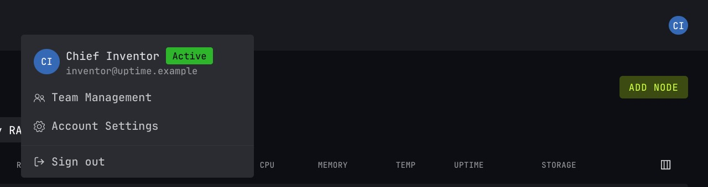

A tour of the interface
The top navigation, the organizational-unit sidebar, the Nodes table and the account menu.
This page is a map of the web UI: what each section is for, how the unit sidebar filters what you see, and how to read the Nodes table, which is where you spend most of your time. Each section links to the page that covers it in depth.

The top navigation
The bar across the top is the same on every page. Click the logo to return to Nodes. A section you have no permission to read is hidden from the bar.
- Nodes — the list of every device in the account, with live status and metrics. Click a row to open its node panel on the right, where you run commands, open a terminal, install an OS and change the node's settings (The node panel). Add node at the top right starts adoption (Add a device).
- Organization — the tree of organizational units and the policies each unit sets for its nodes: boot target, automatic EEPROM flashing on approval, SSH password login and more. The first row, Account defaults, holds the values every unit inherits (Organization and units).
- Credentials — who can log in to your devices. SSH Keys is the account's inventory of public keys, Users holds the OS users the platform creates on devices, and CA Certificates holds trusted certificate authorities (Access and credentials).
- Secrets — values delivered to devices and playbooks. Secrets lists secrets and variables, Tags groups them, and Tokens holds adoption tokens (Secrets and variables).
- Operations — automation and images. Playbooks and Runs are your automation and its history (Playbooks); Install images, Backups and Gold images are the OS images you install and capture (Install an operating system).
- Utilities — software roles kept configured on every node an assignment reaches, such as security updates or a kiosk display. Catalog lists what is available, Assignments what is assigned where (Utilities).
- Status — Attention lists every node that needs an operator now (offline, awaiting approval, agent update available, in recovery and more), and Logs is the fleet's command history. The small number next to Status counts open conditions, not nodes: a node that is offline and also has an agent update waiting counts twice (Status and audit).



The Organizational Units sidebar
Most pages — Nodes, Organization, Credentials, Secrets, Operations, Utilities and Status — show the Organizational Units sidebar on the left. It shows your unit tree (units can be nested one level: Laboratory contains Test bench), with a count beside each unit.
Selecting a unit filters the page to what belongs to that unit. On Nodes, clicking Garage shows only the five Garage nodes; click All devices to see everything again. The selection is part of the page address, so you can bookmark or share a filtered view.

Above the tree, each page adds a few rows of its own:
| Page | Extra rows |
|---|---|
| Nodes | All devices, Favorites, Unassigned |
| Credentials | All keys, Unattached, All nodes |
| Secrets | All secrets, Not attached, and a Tags list below the tree |
| Operations | All playbooks |
| Utilities | All assignments, Unassigned, All nodes, Assigned to nodes |
| Status | All nodes, No unit |
| Organization | Account defaults |
Drag and drop. On most pages you can drag an item onto a unit to assign it there; the hint under the tree says what a drop does on that page. On Secrets, dragging a secret onto a unit attaches it; on Operations, dragging a playbook onto a unit adds the unit to its scope; on Credentials, dropping a key on a unit attaches it to one of the unit's users. On Nodes, dragging works only in selection mode (below). The sidebar elsewhere only filters — you create, rename and delete units on the Organization page, where the sidebar has + New OU and a delete icon on each unit.
Click the ‹ arrow next to the sidebar's title to hide it and give the table more room.
The Nodes table
Status at a glance
The bar at the left edge of each row, and the word under the node's name, give its status:
| Color | Label you see | Meaning |
|---|---|---|
| Solid green | ONLINE | Connected and in no special mode. |
| Violet, row tinted | RECOVERY | Running the network-boot recovery system instead of its installed OS (see Install an operating system). |
| Yellow, with a PENDING badge | AWAITING APPROVAL | The device presented itself and waits for you to approve it. |
| Orange | MAINTENANCE | The node is executing a command. |
| Yellow | RESTARTING, INSTALLING OS, SHUTTING DOWN, SHUTDOWN, READY FOR ADOPTION | A transition, or a node waiting to be adopted. A node held while a non-reboot command runs reads WORKING instead of Restarting. |
| Blue | FLASHING, BUSY | The bootloader is being written, or the node is busy. |
| Red | OFFLINE, ADOPTION FAILED, OS INSTALL FAILED | Not connected, or the last operation failed. |
| Grey | UNREACHABLE, ADOPTING | The platform cannot reach it, or adoption is in progress. |
A few badges can appear next to a name: PENDING and REJECTED (approval), REBOOT PENDING (the bootloader was flashed and the node has not rebooted yet), AUTO-RECOVERED (the node failed to boot its OS repeatedly and was put into recovery), WATCHDOG OFF (the device disarmed its own watchdog) and UNDER-VOLTAGE. Hover over a badge for the explanation. Deleted nodes whose devices may still try to connect appear as grey rows at the end of the list (filter Deleted).
Columns
| Column | What it shows |
|---|---|
| Node | The node's name and status label. |
| ID button | Blinks the device's LED so you can find it in the rack. It needs the node online. |
| Fav | The star adds the node to your Favorites (personal to you). |
| Hostname | The hostname the device reports. A node in recovery shows a name ending in -recovery. |
| Address | The device's network address. |
| Unit | The organizational unit the node belongs to. |
| Board | The board model, shortened: CM4, CM5, CM5 Lite, Pi 4, Pi 5. |
| RAM, Disk | Installed memory and the size of the boot disk. |
| OS | The operating system the node runs. |
| CPU, Memory, Temp | Live metrics. They show a dash when the node is offline. |
| Uptime | Time since boot for a connected node; for an offline one, when it was last seen (seen 1d ago). |
| Storage | Used and total space, with a bar. |
Click a column heading to sort by it; click again to reverse; a third click clears the sort. When the window is narrow, the less important columns hide themselves first.
The column chooser — the icon at the right end of the heading row — lets you hide columns you do not need. Show all and Hide all are at the top. Your choice is stored in this browser.

Search and filters

- Search matches a node's name, IP address, serial, OS and notes.
- All statuses narrows to Online, Recovery, Maintenance, Offline or Deleted. Every live node falls under exactly one of the first four, so if you cannot find a node, step through them. Online includes nodes in transition and nodes awaiting approval.
- All boards lists the board models present in your fleet.
- Any RAM offers ≥ 4 GB, ≥ 8 GB and ≥ 16 GB.
- Any disk offers ≥ 128 GB, ≥ 256 GB, ≥ 512 GB and ≥ 1 TB.
If nothing matches, the table says No nodes match the current filters.
Selecting nodes and assigning them to a unit
Click Select / Assign to unit next to the page title. Each row gets a checkbox, and the toolbar changes:
- Select all ticks every node that matches the current unit and filters, on all pages, and turns into Deselect all; the checkbox in the heading row does the same.
- Assign to unit lists your units, plus Remove from unit (Unassigned). Pick one to move every selected node.
- Actions (with the number selected) offers Reboot, Reboot to recovery, Run playbook, and under Danger, Shutdown and Delete. Each asks for confirmation first.
- Done (where Select / Assign to unit was) and Cancel both leave selection mode. Moves you already made stay made.
While selection mode is on, you can also drag nodes onto a unit in the sidebar; the hint under the tree reminds you that dropping on Unassigned takes them out of their unit. You can move a single node from its node panel as well.

Pages
Below the table, Per page sets 10, 20, 50 or 100 rows (remembered in this browser), and the arrows step through the pages. The counter reads, for example, 1–5 of 5.
Live updates
The UI updates itself: node status, metrics, command progress and playbook runs arrive over a live connection, so you never need to reload to see a node come online. If that connection stays down for more than a few seconds, a banner at the top says Live updates are disconnected. — the page may then be out of date. It reconnects on its own; reload if the banner stays.
The account menu
The round badge with your initials at the top right opens the account menu.

- Your name, a status badge and the email you sign in with.
- Team Management — members, invitations and roles, and the account's name (Team and security).
- Account Settings — your password, two-step verification, passkeys and sessions on the Account tab, and an Advanced tab. Depending on your role you also see Master Tokens, Audit (Super Admin only) and Subscription.
- An organization switcher appears here if you belong to more than one account, and a Terms of Use link if the operator of the server configured one.
- Sign out ends this session.
Next: Add a device.